Étude de cas - Analyse individuelle pour comparaison des résultats
17/03/2026
Last updated: 2026-03-17
Checks: 5 2
Knit directory: Data_Analysis/
This reproducible R Markdown analysis was created with workflowr (version 1.7.2). The Checks tab describes the reproducibility checks that were applied when the results were created. The Past versions tab lists the development history.
The R Markdown is untracked by Git. To know which version of the R
Markdown file created these results, you’ll want to first commit it to
the Git repo. If you’re still working on the analysis, you can ignore
this warning. When you’re finished, you can run
wflow_publish to commit the R Markdown file and build the
HTML.
Great job! The global environment was empty. Objects defined in the global environment can affect the analysis in your R Markdown file in unknown ways. For reproduciblity it’s best to always run the code in an empty environment.
The command set.seed(20260226) was run prior to running
the code in the R Markdown file. Setting a seed ensures that any results
that rely on randomness, e.g. subsampling or permutations, are
reproducible.
Great job! Recording the operating system, R version, and package versions is critical for reproducibility.
Nice! There were no cached chunks for this analysis, so you can be confident that you successfully produced the results during this run.
Using absolute paths to the files within your workflowr project makes it difficult for you and others to run your code on a different machine. Change the absolute path(s) below to the suggested relative path(s) to make your code more reproducible.
| absolute | relative |
|---|---|
| /Users/thanhhuong/R/Data_Analysis | . |
Great! You are using Git for version control. Tracking code development and connecting the code version to the results is critical for reproducibility.
The results in this page were generated with repository version 090db42. See the Past versions tab to see a history of the changes made to the R Markdown and HTML files.
Note that you need to be careful to ensure that all relevant files for
the analysis have been committed to Git prior to generating the results
(you can use wflow_publish or
wflow_git_commit). workflowr only checks the R Markdown
file, but you know if there are other scripts or data files that it
depends on. Below is the status of the Git repository when the results
were generated:
Ignored files:
Ignored: .DS_Store
Ignored: .Rhistory
Ignored: .Rproj.user/
Ignored: analysis/.DS_Store
Ignored: analysis/.Rhistory
Ignored: analysis/images/
Untracked files:
Untracked: DataMiningwithR/
Untracked: analysis/EDC_Huong.Rmd
Untracked: analysis/EDC_Jade.Rmd
Untracked: stats_python_theorie_a_pratique_duverier_djifack_zebaze/
Unstaged changes:
Modified: analysis/ML_2.Rmd
Modified: analysis/index.Rmd
Note that any generated files, e.g. HTML, png, CSS, etc., are not included in this status report because it is ok for generated content to have uncommitted changes.
There are no past versions. Publish this analysis with
wflow_publish() to start tracking its development.
Contexte
La logique retenue est la suivante :
- importation et préparation des données ;
- analyse descriptive ;
- ACP sur les variables quantitatives ;
- AFCM sur les variables qualitatives ;
- CAH sur les scores de l’ACP ;
- CART et Random Forest pour la prédiction de la classe de dépense calorique.
1. Préparation de l’environnement
library(corrplot)
library(FactoMineR)
library(factoextra)
library(rpart)
library(rpart.plot)
library(randomForest)2. Importation des données
setwd("/Users/thanhhuong/R/Data_Analysis")
gym <- read.table("/Users/thanhhuong/Downloads/M1/Etude de cas/gym_members_exercise_tracking.csv", sep = ",", dec = ".", header = T)
str(gym)'data.frame': 973 obs. of 15 variables:
$ Age : int 56 46 32 25 38 56 36 40 28 28 ...
$ Gender : chr "Male" "Female" "Female" "Male" ...
$ Weight..kg. : num 88.3 74.9 68.1 53.2 46.1 ...
$ Height..m. : num 1.71 1.53 1.66 1.7 1.79 1.68 1.72 1.51 1.94 1.84 ...
$ Max_BPM : int 180 179 167 190 188 168 174 189 185 169 ...
$ Avg_BPM : int 157 151 122 164 158 156 169 141 127 136 ...
$ Resting_BPM : int 60 66 54 56 68 74 73 64 52 64 ...
$ Session_Duration..hours. : num 1.69 1.3 1.11 0.59 0.64 1.59 1.49 1.27 1.03 1.08 ...
$ Calories_Burned : num 1313 883 677 532 556 ...
$ Workout_Type : chr "Yoga" "HIIT" "Cardio" "Strength" ...
$ Fat_Percentage : num 12.6 33.9 33.4 28.8 29.2 15.5 21.3 30.6 28.9 29.7 ...
$ Water_Intake..liters. : num 3.5 2.1 2.3 2.1 2.8 2.7 2.3 1.9 2.6 2.7 ...
$ Workout_Frequency..days.week.: int 4 4 4 3 3 5 3 3 4 3 ...
$ Experience_Level : int 3 2 2 1 1 3 2 2 2 1 ...
$ BMI : num 30.2 32 24.7 18.4 14.4 ...dim(gym)[1] 973 15summary(gym) Age Gender Weight..kg. Height..m.
Min. :18.00 Length:973 Min. : 40.00 Min. :1.500
1st Qu.:28.00 Class :character 1st Qu.: 58.10 1st Qu.:1.620
Median :40.00 Mode :character Median : 70.00 Median :1.710
Mean :38.68 Mean : 73.85 Mean :1.723
3rd Qu.:49.00 3rd Qu.: 86.00 3rd Qu.:1.800
Max. :59.00 Max. :129.90 Max. :2.000
Max_BPM Avg_BPM Resting_BPM Session_Duration..hours.
Min. :160.0 Min. :120.0 Min. :50.00 Min. :0.500
1st Qu.:170.0 1st Qu.:131.0 1st Qu.:56.00 1st Qu.:1.040
Median :180.0 Median :143.0 Median :62.00 Median :1.260
Mean :179.9 Mean :143.8 Mean :62.22 Mean :1.256
3rd Qu.:190.0 3rd Qu.:156.0 3rd Qu.:68.00 3rd Qu.:1.460
Max. :199.0 Max. :169.0 Max. :74.00 Max. :2.000
Calories_Burned Workout_Type Fat_Percentage Water_Intake..liters.
Min. : 303.0 Length:973 Min. :10.00 Min. :1.500
1st Qu.: 720.0 Class :character 1st Qu.:21.30 1st Qu.:2.200
Median : 893.0 Mode :character Median :26.20 Median :2.600
Mean : 905.4 Mean :24.98 Mean :2.627
3rd Qu.:1076.0 3rd Qu.:29.30 3rd Qu.:3.100
Max. :1783.0 Max. :35.00 Max. :3.700
Workout_Frequency..days.week. Experience_Level BMI
Min. :2.000 Min. :1.00 Min. :12.32
1st Qu.:3.000 1st Qu.:1.00 1st Qu.:20.11
Median :3.000 Median :2.00 Median :24.16
Mean :3.322 Mean :1.81 Mean :24.91
3rd Qu.:4.000 3rd Qu.:2.00 3rd Qu.:28.56
Max. :5.000 Max. :3.00 Max. :49.84 3. Préparation et nettoyage des données
La variable cible continue est Calories_Burned. Dans cette version de l’analyse, l’IMC (BMI) n’est pas retenu comme variable quantitative active, car il s’agit d’une variable calculée à partir du poids et de la taille, donc potentiellement redondante.
3.1 Création des objets d’analyse
# Variable cible continue
calories <- gym$Calories_Burned
# Mise en forme des variables qualitatives
gym$Gender <- as.factor(gym$Gender)
gym$Workout_Type <- as.factor(gym$Workout_Type)
gym$Experience_Level <- as.factor(gym$Experience_Level)
# Variables quantitatives actives pour ACP / CAH
gym_quanti <- gym[, c(
"Age", "Weight..kg.", "Height..m.", "Max_BPM", "Avg_BPM",
"Resting_BPM", "Session_Duration..hours.", "Fat_Percentage",
"Water_Intake..liters.", "Workout_Frequency..days.week."
)]
# Variables qualitatives pour AFCM
gym_quali <- gym[, c("Gender", "Workout_Type", "Experience_Level")]
str(gym_quanti)'data.frame': 973 obs. of 10 variables:
$ Age : int 56 46 32 25 38 56 36 40 28 28 ...
$ Weight..kg. : num 88.3 74.9 68.1 53.2 46.1 ...
$ Height..m. : num 1.71 1.53 1.66 1.7 1.79 1.68 1.72 1.51 1.94 1.84 ...
$ Max_BPM : int 180 179 167 190 188 168 174 189 185 169 ...
$ Avg_BPM : int 157 151 122 164 158 156 169 141 127 136 ...
$ Resting_BPM : int 60 66 54 56 68 74 73 64 52 64 ...
$ Session_Duration..hours. : num 1.69 1.3 1.11 0.59 0.64 1.59 1.49 1.27 1.03 1.08 ...
$ Fat_Percentage : num 12.6 33.9 33.4 28.8 29.2 15.5 21.3 30.6 28.9 29.7 ...
$ Water_Intake..liters. : num 3.5 2.1 2.3 2.1 2.8 2.7 2.3 1.9 2.6 2.7 ...
$ Workout_Frequency..days.week.: int 4 4 4 3 3 5 3 3 4 3 ...str(gym_quali)'data.frame': 973 obs. of 3 variables:
$ Gender : Factor w/ 2 levels "Female","Male": 2 1 1 2 2 1 2 1 2 2 ...
$ Workout_Type : Factor w/ 4 levels "Cardio","HIIT",..: 4 2 1 3 3 2 1 1 3 1 ...
$ Experience_Level: Factor w/ 3 levels "1","2","3": 3 2 2 1 1 3 2 2 2 1 ...3.2 Création de la classe de dépense calorique
Les classes de dépense calorique sont construites à partir des tertiles de Calories_Burned.
burned_cal <- quantile(
gym$Calories_Burned,
probs = c(0, 1/3, 2/3, 1),
na.rm = TRUE
)
burned_cal 0% 33.33333% 66.66667% 100%
303 784 1006 1783 gym$Classe_Calories <- cut(
gym$Calories_Burned,
breaks = burned_cal,
include.lowest = TRUE,
labels = c("Faible", "Moderee", "Haute")
)
gym$Classe_Calories <- as.factor(gym$Classe_Calories)
table(gym$Classe_Calories)
Faible Moderee Haute
325 324 324 prop.table(table(gym$Classe_Calories))
Faible Moderee Haute
0.3340185 0.3329908 0.3329908 4. Analyse descriptive
Cette étape permet d’obtenir une première lecture du comportement des variables clés et de leurs corrélations.
4.1 Boxplots de quelques variables importantes
par(mfrow = c(2, 2))
boxplot(gym$Calories_Burned, main = "Calories_Burned")
boxplot(gym$Session_Duration..hours., main = "Session_Duration")
boxplot(gym$Fat_Percentage, main = "Fat_Percentage")
boxplot(gym$Workout_Frequency..days.week., main = "Workout_Frequency")
par(mfrow = c(1, 1))4.2 Corrélations entre variables quantitatives
cor_matrix <- cor(gym_quanti, use = "pairwise.complete.obs")
round(cor_matrix, 2) Age Weight..kg. Height..m. Max_BPM Avg_BPM
Age 1.00 -0.04 -0.03 -0.02 0.04
Weight..kg. -0.04 1.00 0.37 0.06 0.01
Height..m. -0.03 0.37 1.00 -0.02 -0.01
Max_BPM -0.02 0.06 -0.02 1.00 -0.04
Avg_BPM 0.04 0.01 -0.01 -0.04 1.00
Resting_BPM 0.00 -0.03 -0.01 0.04 0.06
Session_Duration..hours. -0.02 -0.01 -0.01 0.01 0.02
Fat_Percentage 0.00 -0.23 -0.24 -0.01 -0.01
Water_Intake..liters. 0.04 0.39 0.39 0.03 0.00
Workout_Frequency..days.week. 0.01 -0.01 -0.01 -0.03 -0.01
Resting_BPM Session_Duration..hours.
Age 0.00 -0.02
Weight..kg. -0.03 -0.01
Height..m. -0.01 -0.01
Max_BPM 0.04 0.01
Avg_BPM 0.06 0.02
Resting_BPM 1.00 -0.02
Session_Duration..hours. -0.02 1.00
Fat_Percentage -0.02 -0.58
Water_Intake..liters. 0.01 0.28
Workout_Frequency..days.week. -0.01 0.64
Fat_Percentage Water_Intake..liters.
Age 0.00 0.04
Weight..kg. -0.23 0.39
Height..m. -0.24 0.39
Max_BPM -0.01 0.03
Avg_BPM -0.01 0.00
Resting_BPM -0.02 0.01
Session_Duration..hours. -0.58 0.28
Fat_Percentage 1.00 -0.59
Water_Intake..liters. -0.59 1.00
Workout_Frequency..days.week. -0.54 0.24
Workout_Frequency..days.week.
Age 0.01
Weight..kg. -0.01
Height..m. -0.01
Max_BPM -0.03
Avg_BPM -0.01
Resting_BPM -0.01
Session_Duration..hours. 0.64
Fat_Percentage -0.54
Water_Intake..liters. 0.24
Workout_Frequency..days.week. 1.00corrplot(
cor_matrix,
method = "color",
type = "upper",
tl.col = "black",
tl.cex = 0.7
)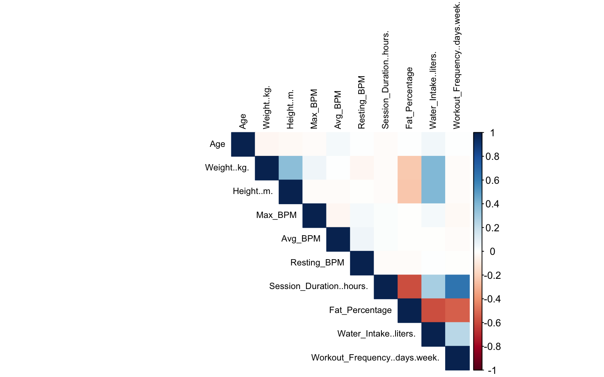
4.3 Corrélations avec la variable cible
cor_target <- cor(
cbind(gym_quanti, Calories_Burned = gym$Calories_Burned),
use = "pairwise.complete.obs"
)
cor_target Age Weight..kg. Height..m.
Age 1.000000000 -0.036339635 -0.027837495
Weight..kg. -0.036339635 1.000000000 0.365321203
Height..m. -0.027837495 0.365321203 1.000000000
Max_BPM -0.017072597 0.057061130 -0.017659884
Avg_BPM 0.035969143 0.009717478 -0.014776288
Resting_BPM 0.004353714 -0.032138091 -0.005089864
Session_Duration..hours. -0.019911904 -0.013665561 -0.010205897
Fat_Percentage 0.002370051 -0.225511640 -0.235520936
Water_Intake..liters. 0.041528359 0.394275710 0.393532902
Workout_Frequency..days.week. 0.008055163 -0.011769328 -0.011269883
Calories_Burned -0.154678760 0.095443473 0.086348051
Max_BPM Avg_BPM Resting_BPM
Age -0.017072597 0.035969143 0.004353714
Weight..kg. 0.057061130 0.009717478 -0.032138091
Height..m. -0.017659884 -0.014776288 -0.005089864
Max_BPM 1.000000000 -0.039751443 0.036647481
Avg_BPM -0.039751443 1.000000000 0.059635502
Resting_BPM 0.036647481 0.059635502 1.000000000
Session_Duration..hours. 0.010050981 0.016014438 -0.016648808
Fat_Percentage -0.009055731 -0.007301655 -0.016834389
Water_Intake..liters. 0.031620643 -0.002910637 0.007725998
Workout_Frequency..days.week. -0.029099066 -0.010680798 -0.007966891
Calories_Burned 0.002090016 0.339658667 0.016517951
Session_Duration..hours. Fat_Percentage
Age -0.01991190 0.002370051
Weight..kg. -0.01366556 -0.225511640
Height..m. -0.01020590 -0.235520936
Max_BPM 0.01005098 -0.009055731
Avg_BPM 0.01601444 -0.007301655
Resting_BPM -0.01664881 -0.016834389
Session_Duration..hours. 1.00000000 -0.581519771
Fat_Percentage -0.58151977 1.000000000
Water_Intake..liters. 0.28341098 -0.588682834
Workout_Frequency..days.week. 0.64414037 -0.537059548
Calories_Burned 0.90814038 -0.597615248
Water_Intake..liters.
Age 0.041528359
Weight..kg. 0.394275710
Height..m. 0.393532902
Max_BPM 0.031620643
Avg_BPM -0.002910637
Resting_BPM 0.007725998
Session_Duration..hours. 0.283410977
Fat_Percentage -0.588682834
Water_Intake..liters. 1.000000000
Workout_Frequency..days.week. 0.238562571
Calories_Burned 0.356930683
Workout_Frequency..days.week. Calories_Burned
Age 0.008055163 -0.154678760
Weight..kg. -0.011769328 0.095443473
Height..m. -0.011269883 0.086348051
Max_BPM -0.029099066 0.002090016
Avg_BPM -0.010680798 0.339658667
Resting_BPM -0.007966891 0.016517951
Session_Duration..hours. 0.644140366 0.908140376
Fat_Percentage -0.537059548 -0.597615248
Water_Intake..liters. 0.238562571 0.356930683
Workout_Frequency..days.week. 1.000000000 0.576150125
Calories_Burned 0.576150125 1.000000000round(cor_target[, "Calories_Burned"], 2) Age Weight..kg.
-0.15 0.10
Height..m. Max_BPM
0.09 0.00
Avg_BPM Resting_BPM
0.34 0.02
Session_Duration..hours. Fat_Percentage
0.91 -0.60
Water_Intake..liters. Workout_Frequency..days.week.
0.36 0.58
Calories_Burned
1.00 5. ACP sur les variables quantitatives
L’ACP est réalisée sur les variables quantitatives actives afin de résumer la structure du nuage des individus et d’identifier les principales dimensions de variation.
5.1 Centrage-réduction
gymCR <- scale(gym_quanti, center = TRUE, scale = TRUE)
apply(gymCR, 2, mean) Age Weight..kg.
1.186672e-16 1.106115e-15
Height..m. Max_BPM
1.307165e-14 -7.496573e-16
Avg_BPM Resting_BPM
-7.076103e-16 -1.370378e-16
Session_Duration..hours. Fat_Percentage
1.201049e-15 8.797348e-16
Water_Intake..liters. Workout_Frequency..days.week.
1.077818e-15 -1.289365e-16 apply(gymCR, 2, sd) Age Weight..kg.
1 1
Height..m. Max_BPM
1 1
Avg_BPM Resting_BPM
1 1
Session_Duration..hours. Fat_Percentage
1 1
Water_Intake..liters. Workout_Frequency..days.week.
1 1 5.2 Réalisation de l’ACP
resAcpGym <- princomp(gym_quanti, cor = TRUE, scores = TRUE)
summary(resAcpGym)Importance of components:
Comp.1 Comp.2 Comp.3 Comp.4 Comp.5
Standard deviation 1.6131312 1.2558300 1.0375022 1.0201389 0.99289265
Proportion of Variance 0.2602192 0.1577109 0.1076411 0.1040683 0.09858358
Cumulative Proportion 0.2602192 0.4179301 0.5255712 0.6296395 0.72822312
Comp.6 Comp.7 Comp.8 Comp.9 Comp.10
Standard deviation 0.95752060 0.78980617 0.72701354 0.59043179 0.54769604
Proportion of Variance 0.09168457 0.06237938 0.05285487 0.03486097 0.02999709
Cumulative Proportion 0.81990769 0.88228707 0.93514194 0.97000291 1.00000000resAcpGym$loadings
Loadings:
Comp.1 Comp.2 Comp.3 Comp.4 Comp.5 Comp.6 Comp.7
Age 0.447 0.260 0.839 0.108
Weight..kg. -0.238 -0.538 -0.115 0.700
Height..m. -0.241 -0.529 0.118 -0.689
Max_BPM -0.203 -0.754 0.401 -0.445 -0.151
Avg_BPM 0.703 -0.302 -0.638
Resting_BPM 0.507 -0.593 -0.173 0.592
Session_Duration..hours. -0.446 0.403
Fat_Percentage 0.542
Water_Intake..liters. -0.459 -0.294
Workout_Frequency..days.week. -0.426 0.414
Comp.8 Comp.9 Comp.10
Age 0.109
Weight..kg. 0.380
Height..m. 0.395
Max_BPM
Avg_BPM
Resting_BPM
Session_Duration..hours. 0.169 0.694 -0.349
Fat_Percentage 0.268 -0.789
Water_Intake..liters. -0.639 -0.205 -0.490
Workout_Frequency..days.week. 0.418 -0.676 -0.117
Comp.1 Comp.2 Comp.3 Comp.4 Comp.5 Comp.6 Comp.7 Comp.8 Comp.9
SS loadings 1.0 1.0 1.0 1.0 1.0 1.0 1.0 1.0 1.0
Proportion Var 0.1 0.1 0.1 0.1 0.1 0.1 0.1 0.1 0.1
Cumulative Var 0.1 0.2 0.3 0.4 0.5 0.6 0.7 0.8 0.9
Comp.10
SS loadings 1.0
Proportion Var 0.1
Cumulative Var 1.0vp <- resAcpGym$sdev^2
vp Comp.1 Comp.2 Comp.3 Comp.4 Comp.5 Comp.6 Comp.7 Comp.8
2.6021922 1.5771090 1.0764109 1.0406833 0.9858358 0.9168457 0.6237938 0.5285487
Comp.9 Comp.10
0.3486097 0.2999709 5.3 Inertie expliquée et choix du nombre d’axes
round(vp / sum(vp) * 100, 2) Comp.1 Comp.2 Comp.3 Comp.4 Comp.5 Comp.6 Comp.7 Comp.8 Comp.9 Comp.10
26.02 15.77 10.76 10.41 9.86 9.17 6.24 5.29 3.49 3.00 round(cumsum(vp) / sum(vp) * 100, 2) Comp.1 Comp.2 Comp.3 Comp.4 Comp.5 Comp.6 Comp.7 Comp.8 Comp.9 Comp.10
26.02 41.79 52.56 62.96 72.82 81.99 88.23 93.51 97.00 100.00 # Critère de Kaiser
sum(vp > 1)[1] 4# Critère de Saporta
1 + 2 * sqrt((ncol(gym_quanti) - 1) / (nrow(gym_quanti) - 1))[1] 1.19245# Inertie cumulée
round(cumsum(vp) / sum(vp) * 100, 2) Comp.1 Comp.2 Comp.3 Comp.4 Comp.5 Comp.6 Comp.7 Comp.8 Comp.9 Comp.10
26.02 41.79 52.56 62.96 72.82 81.99 88.23 93.51 97.00 100.00 par(mfrow = c(1, 2))
barplot(vp, main = "Valeurs propres", las = 2)
abline(h = 1, col = "red", lty = 2)
plot(resAcpGym, main = "Scree plot")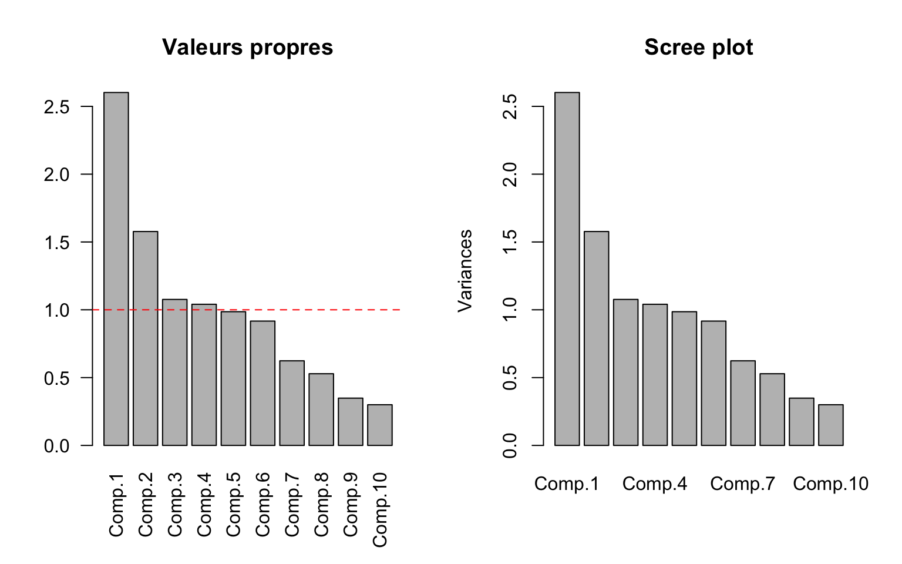
par(mfrow = c(1, 1))5.4 Représentation des individus sur le plan factoriel 1-2
pct1 <- round(vp[1] / sum(vp) * 100, 2)
pct2 <- round(vp[2] / sum(vp) * 100, 2)Sans habillage
plot(
resAcpGym$scores[, 1:2],
main = "ACP - Individus",
xlab = paste0("Axe 1 (", pct1, "%)"),
ylab = paste0("Axe 2 (", pct2, "%)"),
pch = 16
)
abline(h = 0, v = 0, lty = 2, col = "grey")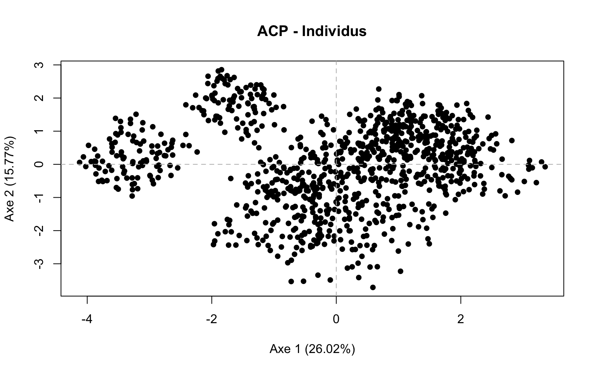
Habillage par genre
col_gender <- as.numeric(gym$Gender)
plot(
resAcpGym$scores[, 1:2],
main = "ACP - Individus colorés par Gender",
xlab = paste0("Axe 1 (", pct1, "%)"),
ylab = paste0("Axe 2 (", pct2, "%)"),
col = col_gender,
pch = 16
)
legend(
"topright",
legend = levels(gym$Gender),
col = 1:length(levels(gym$Gender)),
pch = 16,
bty = "n"
)
abline(h = 0, v = 0, lty = 2, col = "grey")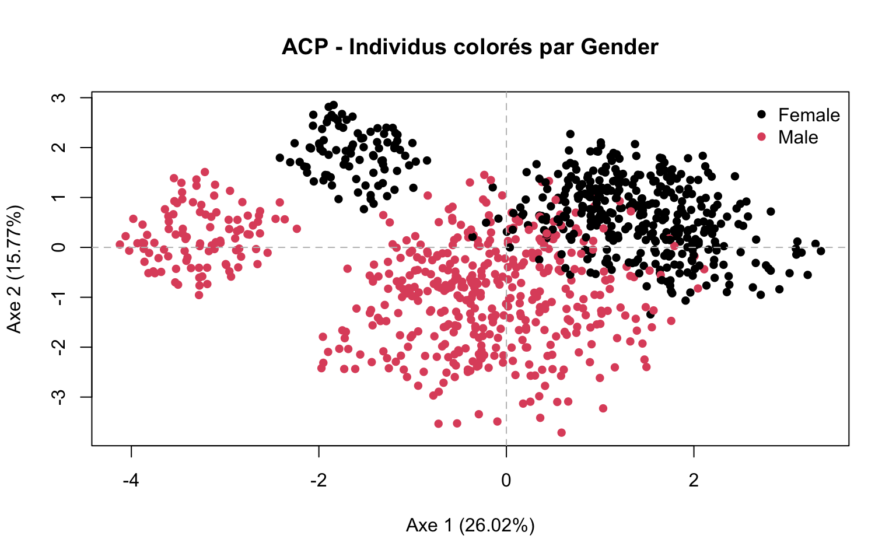
Habillage par type d’entraînement
col_workout <- as.numeric(gym$Workout_Type)
plot(
resAcpGym$scores[, 1:2],
main = "ACP - Individus colorés par Workout_Type",
xlab = paste0("Axe 1 (", pct1, "%)"),
ylab = paste0("Axe 2 (", pct2, "%)"),
col = col_workout,
pch = 16
)
legend(
"topright",
legend = levels(gym$Workout_Type),
col = 1:length(levels(gym$Workout_Type)),
pch = 16,
bty = "n",
cex = 0.8
)
abline(h = 0, v = 0, lty = 2, col = "grey")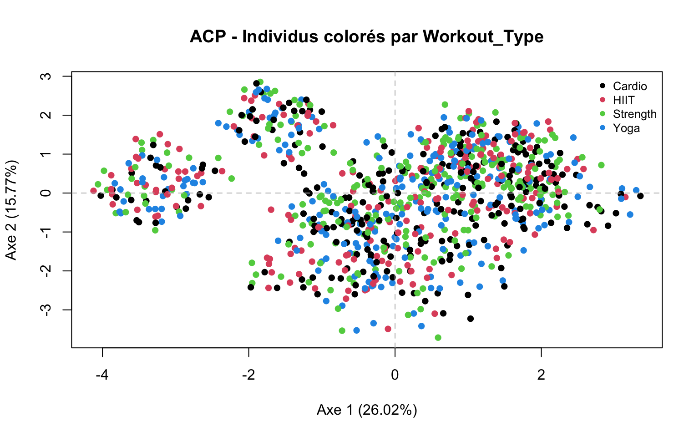
Habillage par niveau d’expérience
col_exp <- as.numeric(gym$Experience_Level)
plot(
resAcpGym$scores[, 1:2],
main = "ACP - Individus colorés par Experience_Level",
xlab = paste0("Axe 1 (", pct1, "%)"),
ylab = paste0("Axe 2 (", pct2, "%)"),
col = col_exp,
pch = 16
)
legend(
"topright",
legend = levels(gym$Experience_Level),
col = 1:length(levels(gym$Experience_Level)),
pch = 16,
bty = "n"
)
abline(h = 0, v = 0, lty = 2, col = "grey")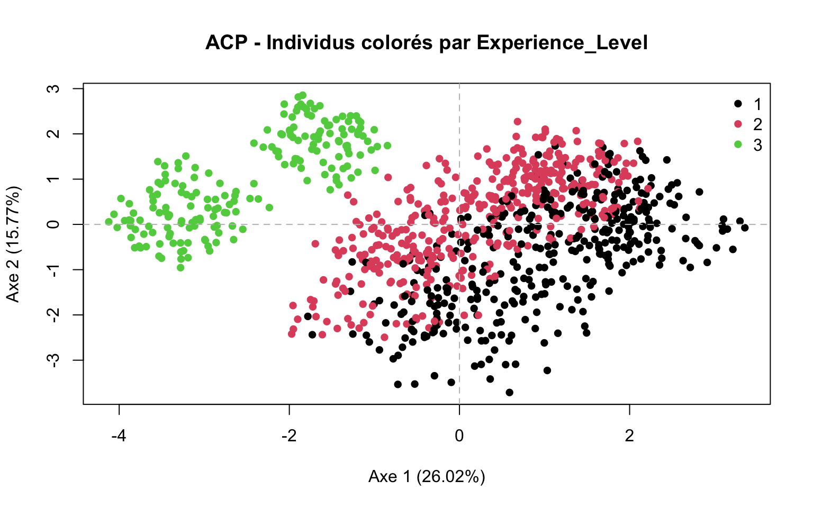
Habillage par classe de calories
col_cal <- as.numeric(gym$Classe_Calories)
plot(
resAcpGym$scores[, 1:2],
main = "ACP - Individus colorés par Classe_Calories",
xlab = paste0("Axe 1 (", pct1, "%)"),
ylab = paste0("Axe 2 (", pct2, "%)"),
col = col_cal,
pch = 16
)
legend(
"topright",
legend = levels(gym$Classe_Calories),
col = 1:length(levels(gym$Classe_Calories)),
pch = 16,
bty = "n"
)
abline(h = 0, v = 0, lty = 2, col = "grey")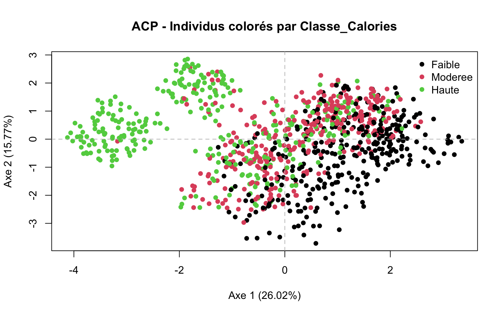
5.5 Cercle des corrélations
corvar <- cor(gym_quanti, resAcpGym$scores[, 1:2])
plot(
corvar[, 1], corvar[, 2],
xlim = c(-1, 1), ylim = c(-1, 1),
xlab = paste0("Axe 1 (", pct1, "%)"),
ylab = paste0("Axe 2 (", pct2, "%)"),
main = "Cercle des corrélations",
type = "n", asp = 1
)
symbols(0, 0, circles = 1, inches = FALSE, add = TRUE, fg = "blue", lty = 2)
abline(h = 0, v = 0, lty = 2, col = "grey")
text(corvar[, 1], corvar[, 2], labels = colnames(gym_quanti), col = "red", cex = 0.8)
arrows(
0, 0, corvar[, 1] * 0.95, corvar[, 2] * 0.95,
length = 0.1, angle = 15, code = 2
)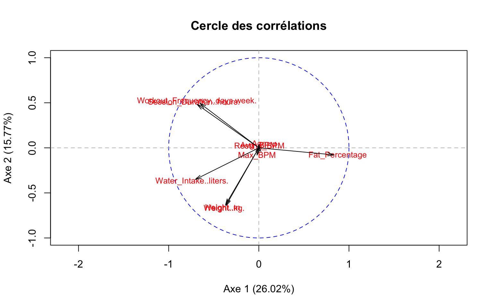
6. AFCM sur les variables qualitatives
L’AFCM permet d’explorer la structure des modalités qualitatives et d’observer leur éventuelle proximité avec la classe de dépense calorique.
gym_quali_afcm <- gym[, c("Gender", "Workout_Type", "Experience_Level", "Classe_Calories")]
str(gym_quali_afcm)'data.frame': 973 obs. of 4 variables:
$ Gender : Factor w/ 2 levels "Female","Male": 2 1 1 2 2 1 2 1 2 2 ...
$ Workout_Type : Factor w/ 4 levels "Cardio","HIIT",..: 4 2 1 3 3 2 1 1 3 1 ...
$ Experience_Level: Factor w/ 3 levels "1","2","3": 3 2 2 1 1 3 2 2 2 1 ...
$ Classe_Calories : Factor w/ 3 levels "Faible","Moderee",..: 3 2 1 1 1 3 3 2 1 2 ...resMCA <- MCA(gym_quali_afcm, graph = FALSE)
resMCA$eig eigenvalue percentage of variance cumulative percentage of variance
dim 1 0.41439035 20.719518 20.71952
dim 2 0.32843479 16.421740 37.14126
dim 3 0.25821236 12.910618 50.05188
dim 4 0.24939604 12.469802 62.52168
dim 5 0.24837325 12.418663 74.94034
dim 6 0.24337071 12.168535 87.10888
dim 7 0.17152834 8.576417 95.68529
dim 8 0.08629415 4.314708 100.00000resMCA$var$contrib Dim 1 Dim 2 Dim 3 Dim 4 Dim 5
Female 1.5158299 0.040722863 20.919099432 7.594768e-02 0.009052221
Male 1.3704763 0.036817931 18.913158391 6.866502e-02 0.008184200
Cardio 0.2033367 0.266034530 8.813724759 5.685173e+01 2.438090530
HIIT 0.2544124 0.008211987 14.971945377 4.092151e+01 7.697869432
Strength 0.1271978 1.215087335 1.170344087 1.030353e+00 69.002982285
Yoga 0.1234144 0.276020590 32.073557201 3.390496e-01 18.921102654
1 11.5889288 18.417734929 0.006141503 5.336064e-02 0.170075466
2 0.5978465 27.881470148 0.713787291 4.323660e-02 0.406899164
3 34.8534908 2.812647769 1.800234192 4.387507e-04 0.123473775
Faible 14.9558560 17.961576157 0.396369452 3.392149e-01 0.080296002
Moderee 2.9976124 29.643763515 0.178205276 3.726899e-03 0.781623465
Haute 31.4115978 1.439912247 0.043433038 2.727673e-01 0.360350807resMCA$var$coord Dim 1 Dim 2 Dim 3 Dim 4 Dim 5
Female -0.23003583 -0.03356674 0.67456753 0.039945462 0.01376244
Male 0.20797760 0.03034801 -0.60988297 -0.036115075 -0.01244275
Cardio -0.11340417 0.11548083 0.58936532 -1.471068638 0.30401405
HIIT 0.13625870 0.02179410 0.82512151 1.340636059 0.58026712
Strength -0.08917051 -0.24536064 -0.21351179 0.196885766 -1.60791433
Yoga 0.09125891 0.12150182 -1.16131368 0.117344796 0.87480871
1 -0.70504845 0.79128910 -0.01281204 0.037114856 -0.06612501
2 -0.15410725 -0.93692713 -0.13292183 -0.032150959 0.09842812
3 1.71552753 0.43386237 0.30776749 -0.004721972 -0.07905139
Faible -0.86149982 0.84050739 -0.11070910 0.100653053 -0.04887020
Moderee -0.38628378 -1.08144680 0.07434687 -0.010566533 0.15270917
Haute 1.25044255 0.23834525 0.03670393 -0.090397177 -0.10368814fviz_mca_var(
resMCA,
repel = TRUE,
ggtheme = theme_minimal(),
title = "AFCM - Modalités qualitatives"
)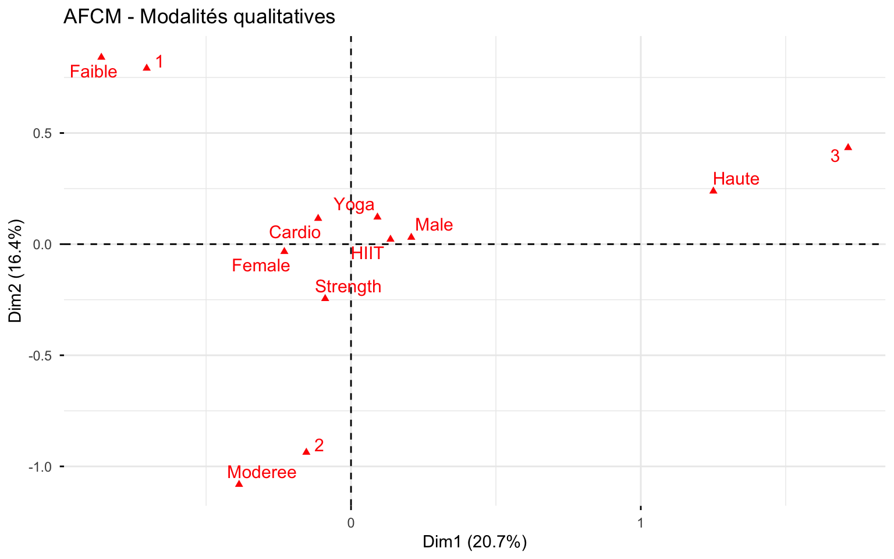
fviz_mca_ind(
resMCA,
habillage = "Classe_Calories",
addEllipses = TRUE,
repel = FALSE,
ggtheme = theme_minimal(),
title = "AFCM - Individus colorés par classe de dépense"
)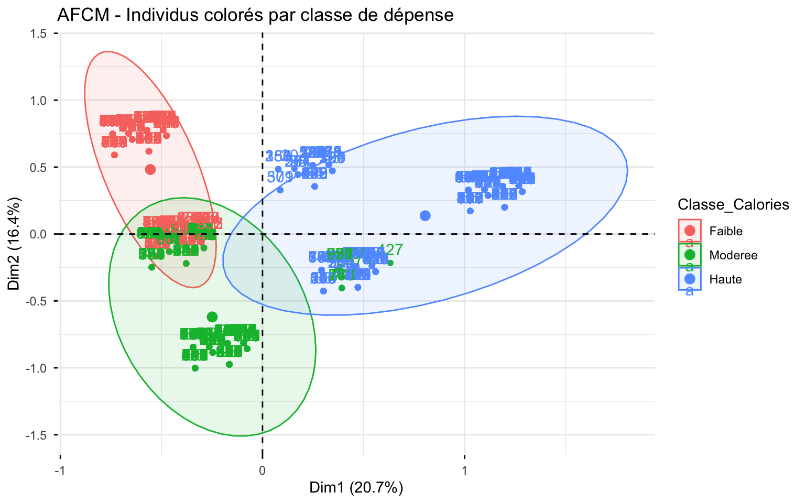
7. CAH sur les scores de l’ACP
La classification ascendante hiérarchique est réalisée sur les scores des trois premiers axes de l’ACP.
7.1 Construction de la CAH
scores_acp <- resAcpGym$scores[, 1:3]
d_acp <- dist(scores_acp, method = "euclidean")
cah_ward <- hclust(d_acp, method = "ward.D2")
plot(cah_ward, hang = -1, main = "CAH sur scores ACP - Ward.D2", sub = "", xlab = "")
rect.hclust(cah_ward, k = 3, border = "red")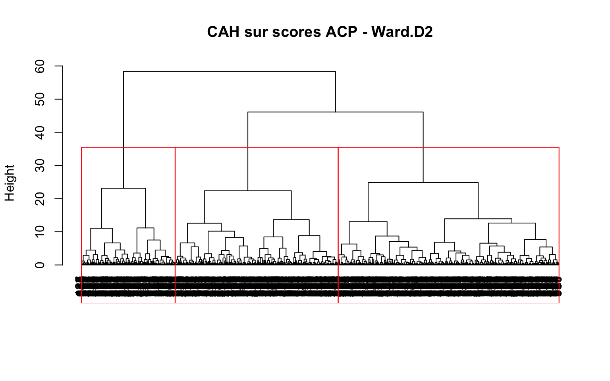
7.2 Découpage en 3 groupes
groupes_cah <- cutree(cah_ward, k = 3)
table(groupes_cah)groupes_cah
1 2 3
191 450 332 gym$Cluster_CAH <- as.factor(groupes_cah)7.3 Projection des groupes sur le plan 1-2 de l’ACP
plot(
resAcpGym$scores[, 1:2],
xlab = paste0("Axe 1 (", pct1, "%)"),
ylab = paste0("Axe 2 (", pct2, "%)"),
col = gym$Cluster_CAH,
pch = 19,
cex = 0.7,
main = "Groupes CAH sur le plan 1-2 de l'ACP"
)
legend(
"topright",
legend = levels(gym$Cluster_CAH),
col = 1:length(levels(gym$Cluster_CAH)),
pch = 19,
bty = "n"
)
abline(h = 0, v = 0, lty = 2, col = "grey")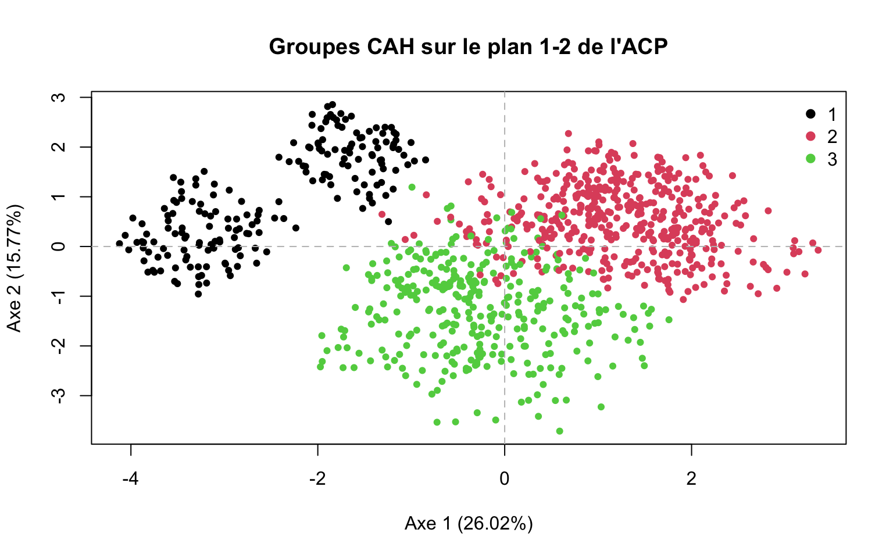
7.4 Description sommaire des clusters
aggregate(gym_quanti, by = list(Cluster = gym$Cluster_CAH), mean) Cluster Age Weight..kg. Height..m. Max_BPM Avg_BPM Resting_BPM
1 1 38.37696 73.48743 1.724660 180.2880 143.2304 62.47120
2 2 39.04889 60.85911 1.655933 178.8556 145.0289 62.72889
3 3 38.36446 91.68042 1.811717 181.0452 142.3645 61.39458
Session_Duration..hours. Fat_Percentage Water_Intake..liters.
1 1.758325 14.80524 3.127749
2 1.140333 29.13200 2.192667
3 1.125030 25.19639 2.926506
Workout_Frequency..days.week.
1 4.534031
2 3.046667
3 2.996988table(gym$Cluster_CAH, gym$Gender)
Female Male
1 89 102
2 361 89
3 12 320table(gym$Cluster_CAH, gym$Workout_Type)
Cardio HIIT Strength Yoga
1 44 49 45 53
2 120 101 131 98
3 91 71 82 88table(gym$Cluster_CAH, gym$Experience_Level)
1 2 3
1 0 1 190
2 214 236 0
3 162 169 1table(gym$Cluster_CAH, gym$Classe_Calories)
Faible Moderee Haute
1 0 16 175
2 197 179 74
3 128 129 758. CART
Le CART est utilisé ici pour prédire la classe de dépense calorique.
8.1 Préparation de la base de modélisation
Dans cette version, on retire Calories_Burned (variable continue cible initiale) et BMI (variable redondante) de la base utilisée pour la classification.
set.seed(123)
data_cart <- subset(gym, select = -c(Calories_Burned, BMI))
str(data_cart)'data.frame': 973 obs. of 15 variables:
$ Age : int 56 46 32 25 38 56 36 40 28 28 ...
$ Gender : Factor w/ 2 levels "Female","Male": 2 1 1 2 2 1 2 1 2 2 ...
$ Weight..kg. : num 88.3 74.9 68.1 53.2 46.1 ...
$ Height..m. : num 1.71 1.53 1.66 1.7 1.79 1.68 1.72 1.51 1.94 1.84 ...
$ Max_BPM : int 180 179 167 190 188 168 174 189 185 169 ...
$ Avg_BPM : int 157 151 122 164 158 156 169 141 127 136 ...
$ Resting_BPM : int 60 66 54 56 68 74 73 64 52 64 ...
$ Session_Duration..hours. : num 1.69 1.3 1.11 0.59 0.64 1.59 1.49 1.27 1.03 1.08 ...
$ Workout_Type : Factor w/ 4 levels "Cardio","HIIT",..: 4 2 1 3 3 2 1 1 3 1 ...
$ Fat_Percentage : num 12.6 33.9 33.4 28.8 29.2 15.5 21.3 30.6 28.9 29.7 ...
$ Water_Intake..liters. : num 3.5 2.1 2.3 2.1 2.8 2.7 2.3 1.9 2.6 2.7 ...
$ Workout_Frequency..days.week.: int 4 4 4 3 3 5 3 3 4 3 ...
$ Experience_Level : Factor w/ 3 levels "1","2","3": 3 2 2 1 1 3 2 2 2 1 ...
$ Classe_Calories : Factor w/ 3 levels "Faible","Moderee",..: 3 2 1 1 1 3 3 2 1 2 ...
$ Cluster_CAH : Factor w/ 3 levels "1","2","3": 1 2 2 2 2 1 2 2 3 3 ...8.2 Échantillons d’apprentissage et de test
n <- nrow(data_cart)
index_train <- sample(1:n, size = 0.7 * n)
train_cart <- data_cart[index_train, ]
test_cart <- data_cart[-index_train, ]
dim(train_cart)[1] 681 15dim(test_cart)[1] 292 158.3 Construction de l’arbre de classification
cart_classe <- rpart(
Classe_Calories ~ .,
data = train_cart,
method = "class",
control = rpart.control(cp = 0.01, minsplit = 20)
)
printcp(cart_classe)
Classification tree:
rpart(formula = Classe_Calories ~ ., data = train_cart, method = "class",
control = rpart.control(cp = 0.01, minsplit = 20))
Variables actually used in tree construction:
[1] Age Avg_BPM Gender
[4] Height..m. Session_Duration..hours.
Root node error: 448/681 = 0.65786
n= 681
CP nsplit rel error xerror xstd
1 0.441964 0 1.00000 1.06696 0.026645
2 0.110491 1 0.55804 0.56250 0.028124
3 0.036830 3 0.33705 0.32366 0.023846
4 0.021205 5 0.26339 0.29241 0.022960
5 0.017857 7 0.22098 0.29688 0.023092
6 0.010045 9 0.18527 0.25670 0.021823
7 0.010000 13 0.14509 0.25670 0.021823plotcp(cart_classe)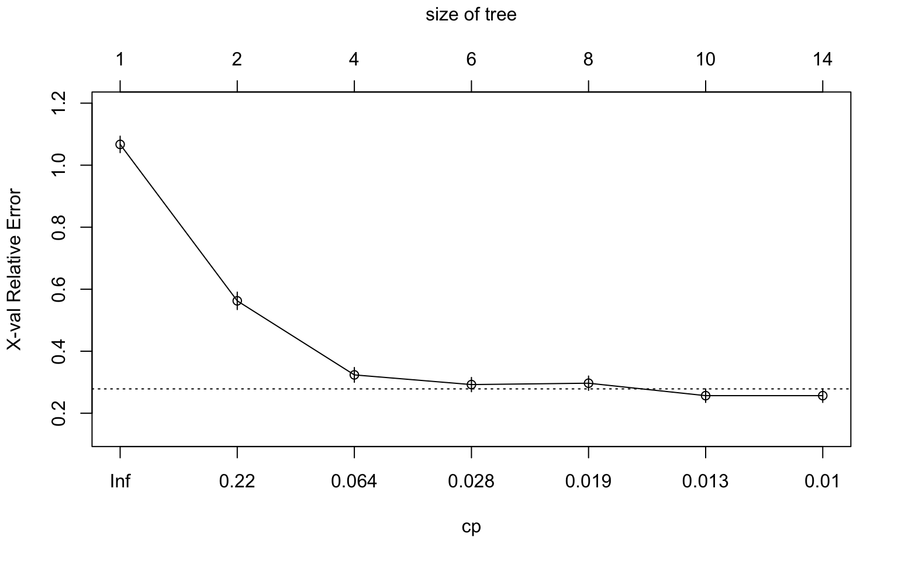
rpart.plot(
cart_classe,
type = 2,
extra = 104,
fallen.leaves = TRUE,
main = "CART - Classe de dépense calorique"
)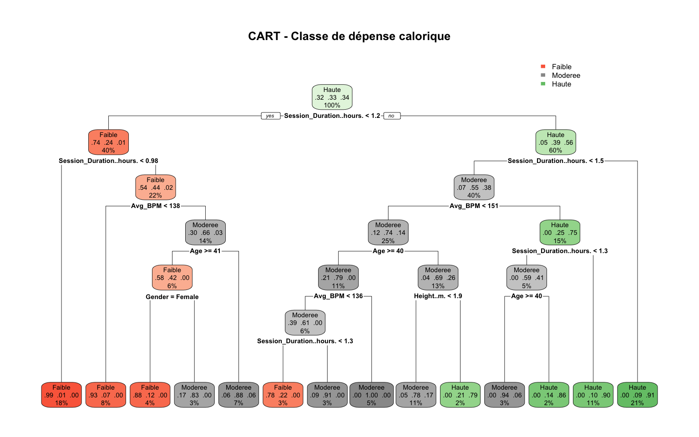
8.4 Évaluation sur l’échantillon test
pred_cart <- predict(cart_classe, newdata = test_cart, type = "class")
tab_cart <- table(Observe = test_cart$Classe_Calories, Pred = pred_cart)
tab_cart Pred
Observe Faible Moderee Haute
Faible 95 9 0
Moderee 6 75 16
Haute 0 7 84acc_cart <- mean(pred_cart == test_cart$Classe_Calories)
acc_cart[1] 0.8698639. Random Forest
La Random Forest est utilisée ici comme méthode d’ensemble pour comparer les performances prédictives avec celles du CART.
9.1 Ajustement du modèle
set.seed(123)
rf_classe <- randomForest(
Classe_Calories ~ .,
data = train_cart,
ntree = 500,
importance = TRUE
)
print(rf_classe)
Call:
randomForest(formula = Classe_Calories ~ ., data = train_cart, ntree = 500, importance = TRUE)
Type of random forest: classification
Number of trees: 500
No. of variables tried at each split: 3
OOB estimate of error rate: 12.19%
Confusion matrix:
Faible Moderee Haute class.error
Faible 204 17 0 0.07692308
Moderee 17 194 16 0.14537445
Haute 0 33 200 0.14163090plot(rf_classe, main = "Erreur OOB - Random Forest")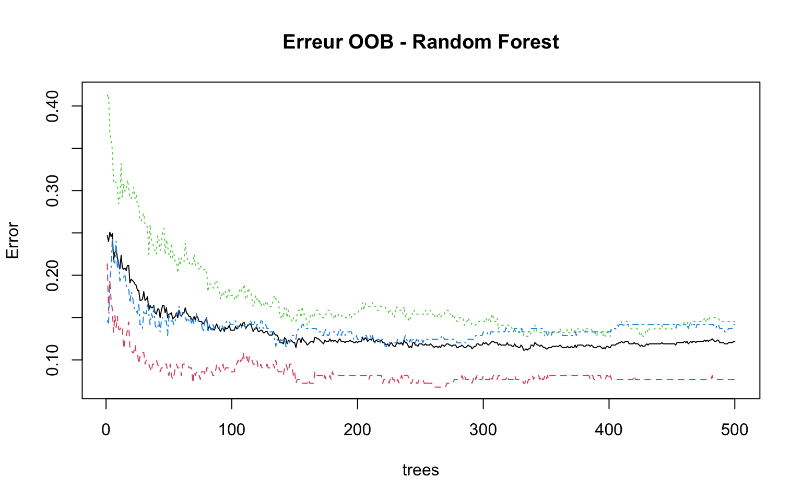
9.2 Importance des variables
importance(rf_classe) Faible Moderee Haute
Age 11.1424145 10.6970451 9.9118853
Gender 8.4858462 7.5644363 6.1284768
Weight..kg. 4.8457638 8.1643147 5.7224415
Height..m. 1.4328563 5.8513222 0.1207956
Max_BPM -1.1625285 -1.6946781 1.3480803
Avg_BPM 27.9536960 35.5739222 41.5697517
Resting_BPM -0.9423334 1.0619599 0.3536187
Session_Duration..hours. 84.1330391 41.7003794 32.4126344
Workout_Type -0.8449579 1.0208316 1.1852416
Fat_Percentage 14.8470383 5.3953813 15.5190724
Water_Intake..liters. 8.2750671 4.2256949 10.5412335
Workout_Frequency..days.week. 11.1543607 0.1185649 7.1309893
Experience_Level 19.7309957 5.9571962 14.0542002
Cluster_CAH 11.1922273 5.5943747 15.2002268
MeanDecreaseAccuracy MeanDecreaseGini
Age 17.1187443 27.188120
Gender 12.2355731 4.493046
Weight..kg. 10.2283783 22.805466
Height..m. 4.7618743 19.450731
Max_BPM -0.9566239 17.609030
Avg_BPM 50.5189697 61.730649
Resting_BPM 0.4118244 16.822420
Session_Duration..hours. 66.7364880 141.404730
Workout_Type 0.8176540 11.066809
Fat_Percentage 17.4521648 41.684851
Water_Intake..liters. 12.1727549 21.894750
Workout_Frequency..days.week. 10.9953488 14.435258
Experience_Level 18.0355449 30.938525
Cluster_CAH 16.1579950 20.897697varImpPlot(rf_classe, main = "Importance des variables - Random Forest")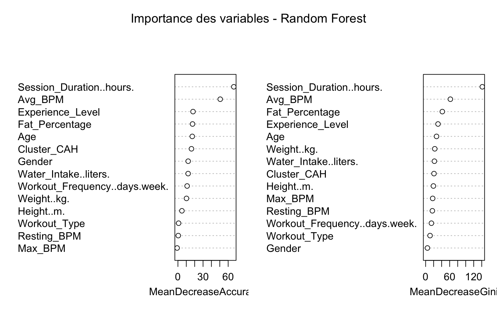
9.3 Évaluation sur l’échantillon test
pred_rf <- predict(rf_classe, newdata = test_cart, type = "class")
tab_rf <- table(Observe = test_cart$Classe_Calories, Pred = pred_rf)
tab_rf Pred
Observe Faible Moderee Haute
Faible 95 9 0
Moderee 8 81 8
Haute 0 10 81acc_rf <- mean(pred_rf == test_cart$Classe_Calories)
acc_rf[1] 0.88013710. Synthèse de comparaison des modèles
Cette dernière section permet d’afficher côte à côte les performances des deux approches de classification retenues.
performance_modeles <- data.frame(
Modele = c("CART", "Random Forest"),
Accuracy_test = c(acc_cart, acc_rf)
)
performance_modeles Modele Accuracy_test
1 CART 0.869863
2 Random Forest 0.88013711. Remarques finales
Ce document constitue une version propre et directement comparable de l’analyse individuelle. Il permet notamment de vérifier, entre deux travaux réalisés séparément :
- si les mêmes variables apparaissent comme structurantes ;
- si les axes de l’ACP sont interprétés de manière cohérente ;
- si la CAH produit des profils similaires ;
- si CART et Random Forest conduisent à des performances proches ou non.
Autrement dit, une base convenable pour comparer des résultats sans se noyer dans un script brut de 400 lignes, ce qui reste un progrès modeste mais appréciable.
sessionInfo()R version 4.5.3 (2026-03-11)
Platform: aarch64-apple-darwin20
Running under: macOS Ventura 13.6.3
Matrix products: default
BLAS: /Library/Frameworks/R.framework/Versions/4.5-arm64/Resources/lib/libRblas.0.dylib
LAPACK: /Library/Frameworks/R.framework/Versions/4.5-arm64/Resources/lib/libRlapack.dylib; LAPACK version 3.12.1
locale:
[1] en_US.UTF-8/en_US.UTF-8/en_US.UTF-8/C/en_US.UTF-8/en_US.UTF-8
time zone: Europe/Paris
tzcode source: internal
attached base packages:
[1] stats graphics grDevices utils datasets methods base
other attached packages:
[1] randomForest_4.7-1.2 rpart.plot_3.1.4 rpart_4.1.24
[4] factoextra_2.0.0 ggplot2_4.0.2 FactoMineR_2.13
[7] corrplot_0.95
loaded via a namespace (and not attached):
[1] gtable_0.3.6 xfun_0.56 bslib_0.10.0
[4] htmlwidgets_1.6.4 ggrepel_0.9.7 rstatix_0.7.3
[7] lattice_0.22-9 vctrs_0.7.1 tools_4.5.3
[10] generics_0.1.4 tibble_3.3.1 cluster_2.1.8.2
[13] pkgconfig_2.0.3 RColorBrewer_1.1-3 S7_0.2.1
[16] scatterplot3d_0.3-45 lifecycle_1.0.5 compiler_4.5.3
[19] farver_2.1.2 stringr_1.6.0 git2r_0.36.2
[22] leaps_3.2 carData_3.0-6 httpuv_1.6.16
[25] htmltools_0.5.9 sass_0.4.10 yaml_2.3.12
[28] Formula_1.2-5 later_1.4.8 pillar_1.11.1
[31] car_3.1-5 ggpubr_0.6.3 jquerylib_0.1.4
[34] tidyr_1.3.2 MASS_7.3-65 flashClust_1.1-4
[37] DT_0.34.0 cachem_1.1.0 abind_1.4-8
[40] tidyselect_1.2.1 digest_0.6.39 mvtnorm_1.3-5
[43] stringi_1.8.7 dplyr_1.2.0 purrr_1.2.1
[46] labeling_0.4.3 rprojroot_2.1.1 fastmap_1.2.0
[49] grid_4.5.3 cli_3.6.5 magrittr_2.0.4
[52] broom_1.0.12 withr_3.0.2 scales_1.4.0
[55] promises_1.5.0 backports_1.5.0 estimability_1.5.1
[58] rmarkdown_2.30 emmeans_2.0.2 otel_0.2.0
[61] ggsignif_0.6.4 workflowr_1.7.2 evaluate_1.0.5
[64] knitr_1.51 rlang_1.1.7 Rcpp_1.1.1
[67] glue_1.8.0 rstudioapi_0.18.0 jsonlite_2.0.0
[70] R6_2.6.1 fs_1.6.7 multcompView_0.1-11